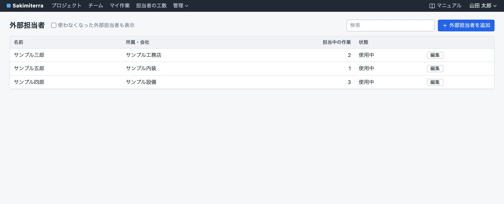

第 2 章 使い始める準備（読む人: システム管理者）
社外の担当者を登録する
協力会社の人や職人など、taskflower にログインしない社外の人を登録する方法を説明します。画面のメニューでは「外部担当者」と表示されます。登録すると、作業の担当者や確認者に選択できるようになります。
利用する場面
工程表には、社員の作業だけでなく、協力会社の作業も入力したい場合があります。社外の人を登録しておくと、その人を作業の担当者として選択できます。
例: 新築の工程表
| 作業 | 担当者 | 担当者の種類 |
|---|---|---|
| 基礎工事 | 山田太郎 | 社員 |
| 電気の配線 | サンプル電設 | 外部担当者 |
| 外壁の塗装 | サンプル塗装 | 外部担当者 |
- 外部担当者は、taskflower にログインしません。外部担当者の作業の進捗は、社員が代わりに入力します。
- 社員は、ここに登録しなくても、担当者として選択できます。
- 登録した外部担当者は、すべてのプロジェクトで選択できます。
登録する
この操作は、システム管理者とプロジェクト管理者が行えます。
- 画面上部のメニューの「管理」をクリックし、「外部担当者」を選択します。外部担当者の一覧が表示されます。
- 「外部担当者を追加」をクリックします。
- 「名前」に、担当者の名前を入力します。担当者を決めずに会社に依頼する場合は、会社名を入力します。例:
サンプル塗装 五郎、サンプル電設 - 「所属・会社」に、会社名などを入力します。入力は省略できます。
- 「保存」をクリックします。
同じ名前の人がすでに登録されている場合は、「同じ名前の外部担当者がほかにもいます（このまま登録できます）。」と表示されます。別の人であれば、そのまま登録できます。同じ人であれば、登録を取りやめてください。名前が 1文字でも異なる場合は、このお知らせは表示されません。登録する前に、一覧に似た名前の人がいないかを確認してください。
一覧の見方と修正方法

| 列 | 説明 |
|---|---|
| 名前 | 外部担当者の名前です。 |
| 所属・会社 | 会社名などです。 |
| 担当中の作業 | すべてのプロジェクトのうち、その人が担当していて、まだ完了していない作業の数です。 |
| 状態 | 「使用中」または「使わなくなった」です。 |
| 目的 | 操作 | 結果 |
|---|---|---|
| 名前・所属を修正する | その人の「編集」をクリックし、内容を修正して「保存」をクリックします。 | 担当している作業にも、新しい名前で表示されます。 |
| 取引が終了した人を、選択できないようにする | その人の「編集」で、「使わなくなった」をオンにして保存します。 | 担当者を選択する一覧に表示されなくなります。現在担当している作業は、そのまま残ります。 |
| 使わなくなった人を、再び選択できるようにする | 「使わなくなった外部担当者も表示」をオンにし、その人の「使わなくなった」をオフにして保存します。 | 再び担当者として選択できるようになります。 |
できないこと
| できないこと | 代わりの方法 |
|---|---|
| 外部担当者が taskflower にログインする | 社員が代わりに入力してください。本人に工程を確認してもらう場合は、工程表を印刷して渡してください（「工程表を印刷する」のページ）。 |
| 外部担当者を削除する | 「使わなくなった」をオンにしてください。 |
| 外部担当者に、taskflower からメールなどで通知する | 電話やメールで、社員から伝えてください。 |